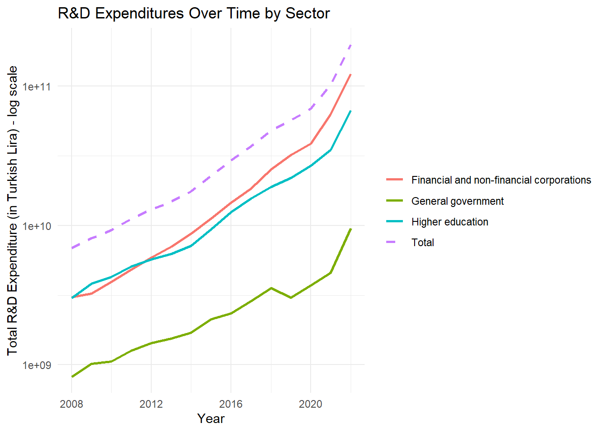
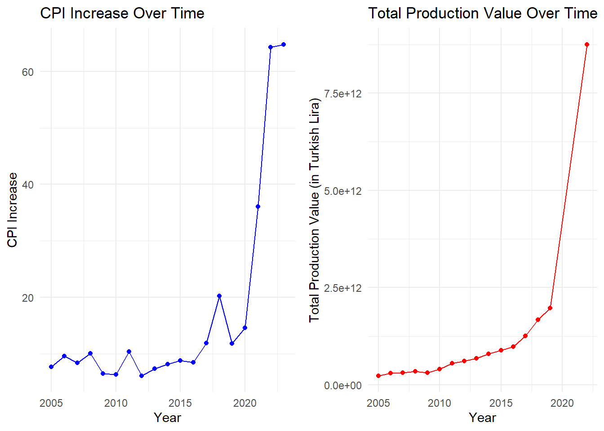
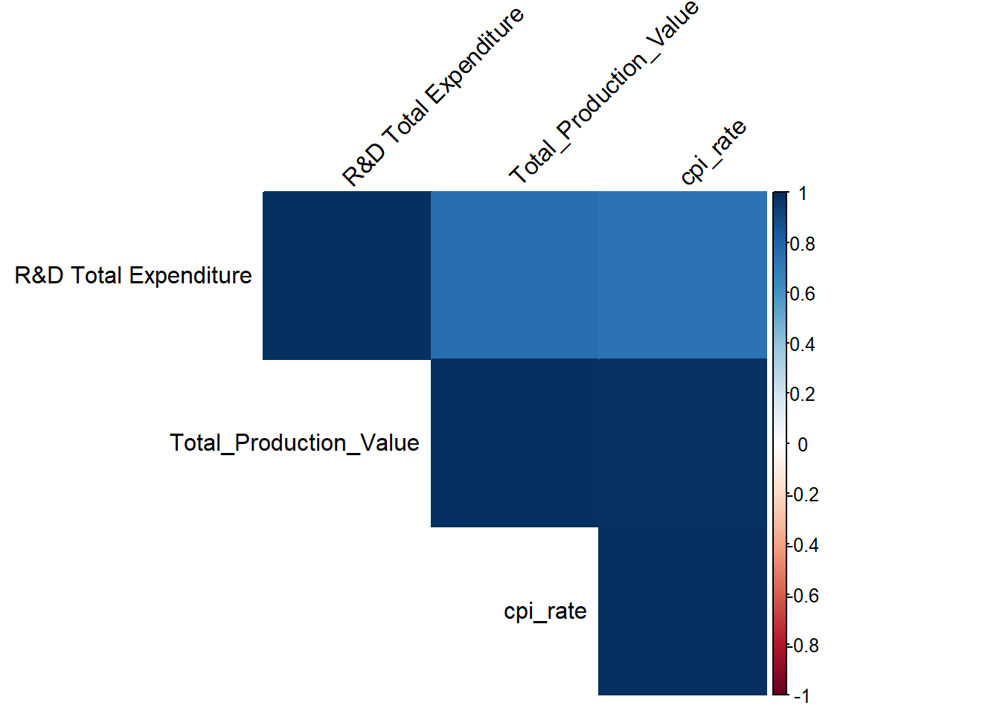
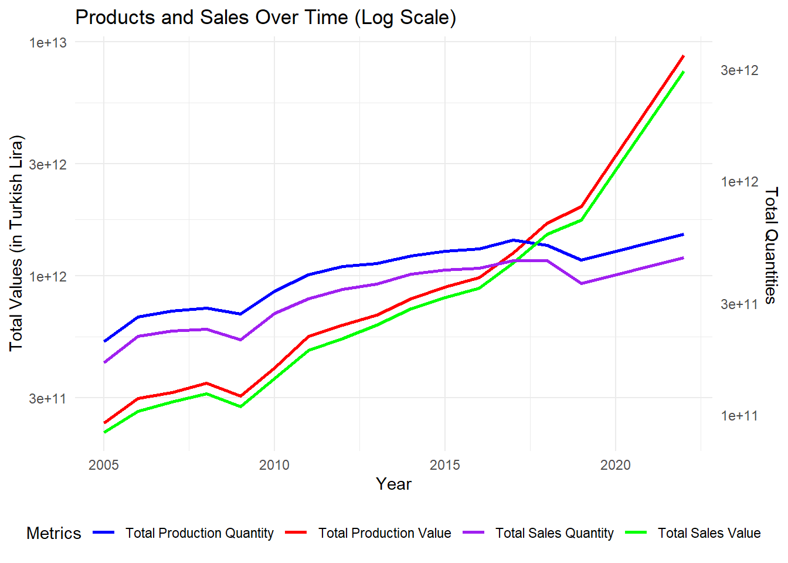
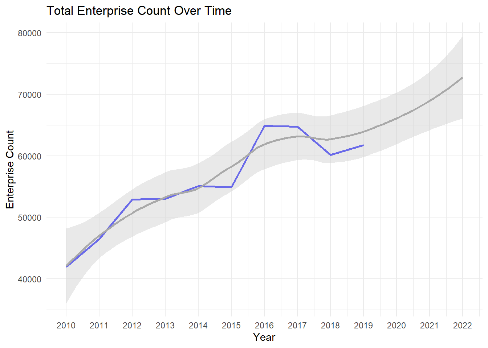
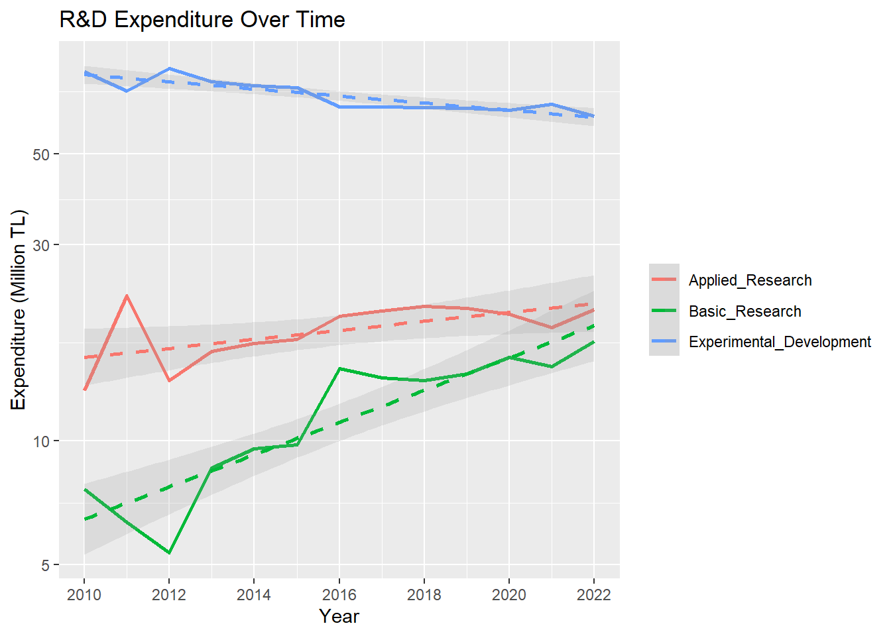
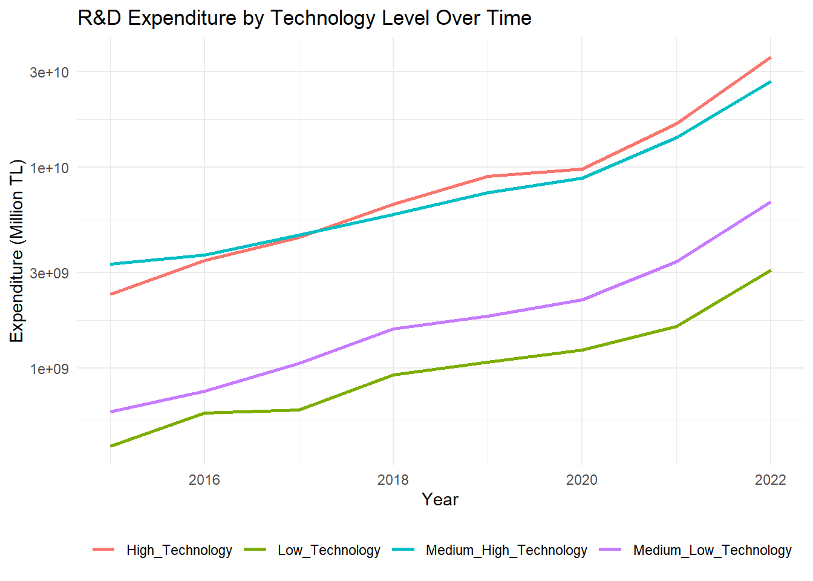
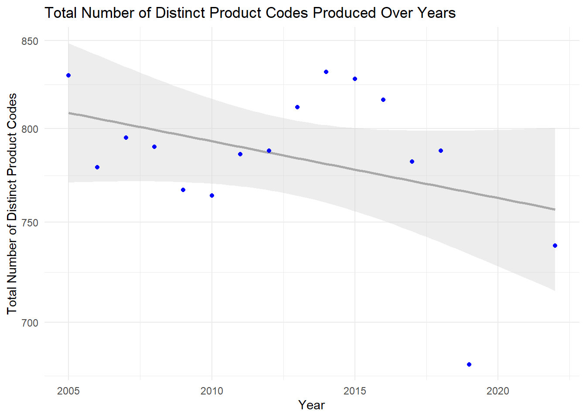

library(dplyr)
##
## Attaching package: 'dplyr'
## The following objects are masked from 'package:stats':
##
## filter, lag
## The following objects are masked from 'package:base':
##
## intersect, setdiff, setequal, union
library(tidyr)
library(stringr)
library(ggplot2)
# Load the RData files
load("C:/Users/cevat/Desktop/emu660-spring2024-cevateness/dataset/imalat_sanayinde_teknoloji_duzeyine_gore_ar_ge_harcamalari .RData")
load("C:/Users/cevat/Desktop/emu660-spring2024-cevateness/dataset/mali_ve_mali_olmayan_sirketlerde_gerceklestirilen_ar_ge_harcamalarinin_ar_ge_turlerine_gore_dagilimi.RData")
load("C:/Users/cevat/Desktop/emu660-spring2024-cevateness/dataset/Sanayi_ürünleri_girişim_sayısı_2005_2022.Rdata")
load("C:/Users/cevat/Desktop/emu660-spring2024-cevateness/dataset/Sanayi_ürünleri_satış_değeri_2005_2022 .RData")
load("C:/Users/cevat/Desktop/emu660-spring2024-cevateness/dataset/Sanayi_ürünleri_satış_miktarı_2005_2022 .RData")
load("C:/Users/cevat/Desktop/emu660-spring2024-cevateness/dataset/Sanayi_ürünleri_üretim_değeri_2005_2022 .RData")
load("C:/Users/cevat/Desktop/emu660-spring2024-cevateness/dataset/Sanayi_ürünleri_üretim_miktarı_2005_2022 .RData")
load("C:/Users/cevat/Desktop/emu660-spring2024-cevateness/dataset/sektore_ve_finans_kaynagina_gore_ar_ge_harcamasi.RData")
load("C:/Users/cevat/Desktop/emu660-spring2024-cevateness/dataset/Tüketici_fiyat_endeks_rakamları_2003_100_ .RData")
load("C:/Users/cevat/Desktop/emu660-spring2024-cevateness/dataset/Yıllık_Sanayi_Ürün_İstatistikleri_Kod_Listesi_PRODTR_2017_2018_ .RData")Project: Exploring CPI and R&D Impact on Industrial Production in Turkey
Welcome to my project page.
Keep an eye on this space to stay updated with my project activities.
1. Project Overview and Scope
This project aims to investigate the relationship between economic performance, Research & Development (R&D) investments, and industrial production in Turkey’s manufacturing sector. By analyzing datasets related to R&D expenditures, economic indicators, and industrial product statistics, the goal is to understand how R&D activities influence industrial production and consumer behavior within the manufacturing industry.
2. Data
R&D Expenditures by Technology Level in Manufacturing:
This dataset provides information on Research & Development (R&D) expenditures categorized by different technology levels within the manufacturing sector. It includes data on the amount of spending allocated to R&D activities based on technological sophistication.
Distribution of R&D Expenditures by R&D Types in Financial and Non-Financial Companies:
This dataset outlines how R&D expenditures are distributed across various types of R&D activities (e.g., basic research, applied research, experimental development) within both financial and non-financial companies. It provides insights into the focus of R&D types.
R&D Expenditures by Sector and Funding Source:
This dataset categorizes R&D expenditures based on industrial sectors (e.g., manufacturing, services) and the sources of funding (e.g., government, private sector). It allows for the analysis of R&D investment patterns across different sectors and funding channels.
Annual Statistics of Industrial Products:
The bundle of datasets includes key statistics related to industrial products, such as sales value, sales quantity, production value, production quantity, and the number of enterprises operating within various industrial sectors. These statistics provide insights into the performance and trends of the manufacturing industry.
Consumer Price Index (CPI) Data:
The CPI dataset tracks changes in consumer prices over time, serving as an important economic indicator. It reflects inflation trends and consumer purchasing power, which can be analyzed in relation to industrial production and R&D investments.
2.1 Data Source
The data source is Türkiye İstatistik Kurumu (Turkish Statistical Institute - TÜİK) database.
To access the folder containing the .RData files used in this analysis, please reach out to the dataset from following link.
2.2 General Information About Data
Sales Quantity: Total sales volume of products domestically and internationally within the reference year or preceding years. Enterprise Count: Number of enterprises providing information in the annual industrial product survey, including estimates for non-responding enterprises.
Production Quantity: Total quantity of products manufactured within the reference year, irrespective of sales, stocking, or internal use.
Production Value: Total value of products manufactured within the reference year, excluding sales, stocking, or internal use.
Sales Value: Total sales value of products domestically and internationally within the reference year, including packaging costs but excluding VAT, excise duties, recycling packaging values, separately charged customer transport and delivery costs, customer discounts, payments for returned goods, and government subsidies.
CPI: Annual rate of change of consumer price index numbers
Distribution of R&D expenditures in financial and non-financial corporations by types of R&D: the percentage distribution of various types of R&D activities through the years.
Gross domestic expenditure on R&D by sector and source of funds: the expenditure amount of sectors from the various funds through the years.
The datasets, explanatory data analyses and remarkable findings about the Product, R&D and CPI dataset bundles are presented by TUIK. Also, the original data can be found. It can be reached out from following links:
Annual Industrial Product (PRODCOM) Statistics - 2022
2.3 Reason of Choice
These datasets were chosen to conduct a comprehensive analysis of the interplay between R&D investments, economic performance, and industrial production in Turkey’s manufacturing sector. By integrating data from various sources, this project aims to provide valuable insights into the drivers of industrial growth and innovation. It seeks to identify potential cause-and-effect relationships, questioning the significance of R&D for product development and its impact on production. Additionally, the study will explore how organizations adapt their R&D strategies in response to economic conditions.
2.4 Preprocessing
The dataset retrieved from the database was initially stored in “.xlsx” format as tables, which required conversion into importable formats suitable for analysis. Subsequently, the dataset exhibited structured product codes with associated descriptions and unit measurements, organized hierarchically. Key preprocessing tasks involved:
Parsing and structuring the hierarchical product codes for meaningful analysis. Mapping product codes to their respective descriptions to facilitate interpretation. Addressing duplicates, redundancies, and missing values within the dataset to ensure data integrity. Performing aggregation and summarization for broader product categories based on hierarchical relationships.
These preprocessing steps were essential to transform the dataset into a clean and structured format suitable for detailed analysis.
A generalized pre-processing function is created for same-shape dataframes having hierarchical product code, NA values and text values.
preprocess_data <- function(data, product_code_col, value_col_prefix) {
# Pivot longer to transform the data
data_long <- data %>%
pivot_longer(cols = starts_with(value_col_prefix), names_to = "Year", values_to = "Production_Value") %>%
mutate(Year = as.numeric(Year))
# Replace non-numeric values like "c" with NA and convert to numeric
data_clean <- data_long %>%
mutate(across(where(is.character), ~na_if(., "c"))) %>%
mutate(Production_Value = as.numeric(Production_Value))
# Handle missing values by removing rows with NA values
data_clean <- data_clean %>%
drop_na(Production_Value)
# Rename columns
data_clean <- data_clean %>%
rename(
Product_Code = all_of(product_code_col),
)
# Define a function to count the number of dots in the Product Code
count_dots <- function(code) {
str_count(code, "\\.")
}
# Filter out rows with more than two dots in the Product Code
data_filtered <- data_clean %>%
filter(count_dots(Product_Code) <= 2)
return(data_filtered)
}
# Apply the preprocessing function to each dataset
prod_value_filtered <- preprocess_data(Sanayi_ürünleri_üretim_değeri_2005_2022, "\nProduct Code", "20")
prod_quantity_filtered <- preprocess_data(Sanayi_ürünleri_üretim_miktarı_2005_2022, "\nProduct Code", "20")
sales_quantity_filtered <- preprocess_data(Sanayi_ürünleri_satış_miktarı_2005_2022, "\nProduct Code", "20")
sales_value_filtered <- preprocess_data(Sanayi_ürünleri_satış_değeri_2005_2022, "\nProduct Code", "20")
enterprise_count_filtered <- preprocess_data(Sanayi_ürünleri_girişim_sayısı_2005_2022, "\nProduct Code", "20")Renaming inappropriate column names, for better coding and analyzing:
colnames(sektore_ve_finans_kaynagina_gore_ar_ge_harcamasi) <- c(
"Sectors", "Year", "Total", "Sub_total_national_funds",
"Financial_and_non_financial_corporations", "Government",
"Higher_education", "Other_national_funds", "Funds_from_abroad"
)
colnames(mali_ve_mali_olmayan_sirketlerde_gerceklestirilen_ar_ge_harcamalarinin_ar_ge_turlerine_gore_dagilimi) <- c(
"Year", "Basic_Research", "Applied_Research", "Experimental_Development"
)
product_code_data <- Yıllık_Sanayi_Ürün_İstatistikleri_Kod_Listesi_PRODTR_2017_2018_ %>%
rename(
Product_Code = `Ürün Kodu\nProduct Code` )
Yıllık_Sanayi_Ürün_İstatistikleri_Kod_Listesi_PRODTR_2017_2018_ <- Yıllık_Sanayi_Ürün_İstatistikleri_Kod_Listesi_PRODTR_2017_2018_ %>%
rename(
Product_Code = `Ürün Kodu\nProduct Code`,
)
3. Analysis
1.R&D expenditures over time and by sector
# Visualize trends in R&D expenditures over time by sector with a logarithmic scale and different line type for Total
ggplot(sektore_ve_finans_kaynagina_gore_ar_ge_harcamasi, aes(x = Year)) +
geom_line(aes(y = Total, color = Sectors, linetype = Sectors), size = 1) +
scale_y_log10() + # Use logarithmic scale
scale_linetype_manual(values = c("Total" = "dashed", "Financial and non-financial corporations" = "solid",
"General government" = "solid", "Higher education" = "solid")) +
labs(title = "R&D Expenditures Over Time by Sector",
x = "Year",
y = "Total R&D Expenditure (in Turkish Lira) - log scale") +
theme_minimal() +
theme(legend.title = element_blank())
Starting with R&D expenditures over years, it can be seen that there is an upside parabolic trend of expenditures in every sector. Years near to 2018, government expenditures seem to have decreased, possibly due to financial policies. However, this decrease does not seem to affect higher education and corporations.
2.Correlations between R&D investments, industrial production metrics, and consumer price levels
library(ggplot2)
library(gridExtra)
# Rename column
colnames(Tüketici_fiyat_endeks_rakamları_2003_100_) <- c("Year", "cpi_rate")
# Group and summarize production data
prod_value_summary <- prod_value_filtered %>%
group_by(Year) %>%
summarize(Total_Production_Value = sum(Production_Value, na.rm = TRUE))
# Create plot for CPI
plot_cpi <- ggplot(Tüketici_fiyat_endeks_rakamları_2003_100_, aes(x = Year, y = cpi_rate)) +
geom_line(color = "blue") +
geom_point(color = "blue") +
labs(
title = "CPI Increase Over Time",
x = "Year",
y = "CPI Increase"
) +
theme_minimal()
# Create plot for Total Production Value
plot_production <- ggplot(prod_value_summary, aes(x = Year, y = Total_Production_Value)) +
geom_line(color = "red") +
geom_point(color = "red") +
labs(
title = "Total Production Value Over Time",
x = "Year",
y = "Total Production Value (in Turkish Lira)"
) +
theme_minimal()
# Arrange plots side by side
grid.arrange(plot_cpi, plot_production, ncol = 2)
Firstly, by checking CPI increase over time and total production value over time in Turkish lira, there is a significant increase in last years and price increase - total value seems highly correlated. It is also observed that R&D expenditures are exponentially increasing after 2018. This suggests rising inflation rates and increasing product values and prices due to the money relative value. So,to check this claim, the correlation is checked and correlation matrix is constructed.
library(corrplot)
# Summarize product value data
prod_value_summary <- prod_value_filtered %>%
group_by(Year) %>%
summarize(Total_Production_Value = sum(Production_Value, na.rm = TRUE))
# Merge datasets for correlation analysis and rename the column afterwards
merged_data <- prod_value_summary %>%
left_join(sektore_ve_finans_kaynagina_gore_ar_ge_harcamasi %>% select(Year, Total), by = "Year") %>%
left_join(Tüketici_fiyat_endeks_rakamları_2003_100_, by = "Year") %>%
rename(`R&D Total Expenditure` = Total)
# Calculate correlations
correlations <- merged_data %>%
select(Total_Production_Value, `R&D Total Expenditure`, cpi_rate) %>%
cor(use = "complete.obs")
print(correlations)
## Total_Production_Value R&D Total Expenditure cpi_rate
## Total_Production_Value 1.0000000 0.7529236 0.9843657
## R&D Total Expenditure 0.7529236 1.0000000 0.7378272
## cpi_rate 0.9843657 0.7378272 1.0000000
# Create correlation heatmap
corrplot(correlations, method = "color", type = "upper", order = "hclust", tl.col = "black", tl.srt = 45)
So, it can be seen that total R&D investments, total production value and CPI increase is highly correlated over years since total R&D investments and total production value is directly affected by relative value of Turkish Lira.
3. Production and Sales change over the years
library(dplyr)
library(ggplot2)
# Group and summarize product data
product_value_summary <- prod_value_filtered %>%
group_by(Year) %>%
summarize(Total_Production_Value = sum(Production_Value, na.rm = TRUE))
product_quantity_summary <- prod_quantity_filtered %>%
group_by(Year) %>%
summarize(Total_Production_Quantity = sum(Production_Value, na.rm = TRUE))
# Group and summarize sales data
sales_value_summary <- sales_value_filtered %>%
group_by(Year) %>%
summarize(Total_Sales_Value = sum(Production_Value, na.rm = TRUE))
sales_quantity_summary <- sales_quantity_filtered %>%
group_by(Year) %>%
summarize(Total_Sales_Quantity = sum(Production_Value, na.rm = TRUE))
# Merge all summaries
merged_summary <- product_value_summary %>%
left_join(product_quantity_summary, by = "Year") %>%
left_join(sales_value_summary, by = "Year") %>%
left_join(sales_quantity_summary, by = "Year")
# Calculate scaling factors
max_prod_value <- max(merged_summary$Total_Production_Value, na.rm = TRUE)
max_prod_quantity <- max(merged_summary$Total_Production_Quantity, na.rm = TRUE)
max_sales_value <- max(merged_summary$Total_Sales_Value, na.rm = TRUE)
max_sales_quantity <- max(merged_summary$Total_Sales_Quantity, na.rm = TRUE)
scaling_factor <- max_sales_value / max_prod_quantity
# Create combined plot
combined_plot <- ggplot(merged_summary, aes(x = Year)) +
geom_line(aes(y = Total_Production_Value, color = "Total Production Value"), size = 1) +
geom_line(aes(y = Total_Production_Quantity , color = "Total Production Quantity"), size = 1) +
geom_line(aes(y = Total_Sales_Value , color = "Total Sales Value"), size = 1) +
geom_line(aes(y = Total_Sales_Quantity, color = "Total Sales Quantity"), size = 1) +
scale_y_log10(
name = "Total Values (in Turkish Lira)",
sec.axis = sec_axis(~ . /scaling_factor, name = " Total Quantities")
) +
scale_color_manual(
values = c(
"Total Production Value" = "red",
"Total Production Quantity" = "blue",
"Total Sales Value" = "green",
"Total Sales Quantity" = "purple"
),
name = "Metrics"
) +
labs(
title = "Products and Sales Over Time (Log Scale)",
x = "Year"
) +
theme_minimal() +
theme(legend.position = "bottom")
# Print the plot
print(combined_plot)
What we observe here is that the fluctuations in production value and CPI do not seem to significantly affect the relationship between production-sale quantity and total value over the years. Additionally, there is a slight increase trend on sale and production quantities over years. Again, near to 2018, we can observe decrease in quantities and momentum decrease in Turkish Lira values.
4. Entriprises Over Years
# Group and summarize product data
enterprise_count_summary <- enterprise_count_filtered %>%
group_by(Year) %>%
summarize(Total_Production_Value = sum(Production_Value, na.rm = TRUE))
# Merge enterprise count data with R&D expenditure data
combined_data <- left_join(
mali_ve_mali_olmayan_sirketlerde_gerceklestirilen_ar_ge_harcamalarinin_ar_ge_turlerine_gore_dagilimi,
enterprise_count_summary,
by = "Year"
)
# Reshape data for plotting
combined_data_long <- combined_data %>%
pivot_longer(cols = c(Basic_Research, Applied_Research, Experimental_Development),
names_to = "Research_Type",
values_to = "Expenditure")
# Plot for Enterprise Count with smoothing cloud and trend line
plot_enterprise_count <- ggplot(combined_data, aes(x = Year, y = Total_Production_Value)) +
geom_line(color = "blue", size = 1) +
geom_smooth(method = "loess", color = "darkgray", fill = "lightgray", se = TRUE, alpha=0.5) +
labs(
title = "Total Enterprise Count Over Time",
x = "Year",
y = "Enterprise Count"
) + scale_x_continuous(breaks = seq(min(combined_data$Year), max(combined_data$Year), by = 1),
labels = seq(min(combined_data$Year), max(combined_data$Year), by = 1)) +
theme_minimal()
plot_enterprise_count
As indicated by the local weighted regression, the total number of enterprises has been increasing over the years, albeit with fluctuating intervals. However, noticeable decreases have been observed during periods of high inflation, suggesting a potential shift in the current trend in the coming years.
4. R&D Expenditure changes in Research Type
# Plot for R&D Expenditures
plot_rnd_expenditure <- ggplot(combined_data_long, aes(x = Year, y = Expenditure, color = Research_Type)) +
geom_line(size = 1 ) +
geom_smooth(method = "lm", se = TRUE, alpha = 0.2, linetype = "dashed") +
labs(
title = "R&D Expenditure Over Time",
x = "Year",
y = "Expenditure (Million TL)"
) +
scale_y_log10() +
scale_x_continuous(breaks = seq(min(combined_data$Year), max(combined_data$Year), by = 2),
labels = seq(min(combined_data$Year), max(combined_data$Year), by = 2) ) +
theme(legend.title = element_blank() )
plot_rnd_expenditure
It is seen that in recent years, experimental development expenditures are decreasing. This may be the result of economic conditions and sector shifts that focus more on profitability and sustainability of projects. The highest increase is in basic research, which may indicate that organizations are leading towards fundamental studies for R&D while potential experimenting or test costs are significantly increasing.
5. R&D Expenditure changes by Technology Level
# Clean up column names
colnames(imalat_sanayinde_teknoloji_duzeyine_gore_ar_ge_harcamalari) <- c("Year", "Total", "High_Technology", "Medium_High_Technology", "Medium_Low_Technology", "Low_Technology")
# Reshape data for plotting
expenditure_long <- imalat_sanayinde_teknoloji_duzeyine_gore_ar_ge_harcamalari %>%
pivot_longer(cols = c(High_Technology, Medium_High_Technology, Medium_Low_Technology, Low_Technology),
names_to = "Technology_Level", values_to = "Expenditure")
# Plot the data
plot_expenditure <- ggplot(expenditure_long, aes(x = Year, y = Expenditure, color = Technology_Level)) +
geom_line(size = 1) +
labs(
title = "R&D Expenditure by Technology Level Over Time",
x = "Year",
y = "Expenditure (Million TL)"
) +
theme_minimal() +
scale_y_log10() +
theme(legend.title = element_blank(), legend.position = "bottom")
# Print the plot
print(plot_expenditure)
The graph shows a clear upward trend in R&D expenditures across all technology levels, with high technology leading the growth, followed by medium high technology, medium low technology, and low technology. The reason behind this can not be directly clarified. Even if number of high technology studies are low or decreasing, the budget that needed for may be relatively high comparing to the other levels. But, there is no dramatic change in trends and relative behaviors over the years. So, even though the expenditures for high and medium high technology are significantly higher in 2015s, they keep growing at nearly the same rates as medium low and low technologies.
6. Total number of Distinct Products Produced
distinct_counts <- prod_quantity_filtered %>%
group_by(Year) %>%
summarize(Count_Distinct_Product_Code = n_distinct(Product_Code))
ggplot(distinct_counts, aes(x = Year, y = Count_Distinct_Product_Code)) +
geom_smooth(method = "lm", color = "darkgray",fill = "lightgray", se = TRUE) +
geom_point(color = "blue") +
labs(
title = "Total Number of Distinct Product Codes Produced Over Years",
x = "Year",
y = "Total Number of Distinct Product Codes"
) +
scale_y_log10() +
theme_minimal()
# Calculate CPI over the years
cpi_data <- Tüketici_fiyat_endeks_rakamları_2003_100_ %>%
select(Year, cpi_rate)
# Merge distinct_counts with cpi_data
merged_data <- left_join(distinct_counts, cpi_data, by = "Year")Production trends and behaviors can also be affected by economic conditions. Over the years, it is seen that the variety of product types in production is on a decreasing trend. Producers may want to tighten their product portfolios and minimize risks.
4. Data Analysis - Future Works
This study can be classified as descriptive and future analysis predictive and prescriptive can be done by further analysis and additional relational data.
There are some limitations coming from the nature of the data and the situations: Working with hierarchical data has while the highest level of categories does not cover a big portion of data. Quantities of each product code has different unit code. So, numerically analysis toward categories are not possible. High correlation of TL based values with the CPI. So it may dominate other affects.